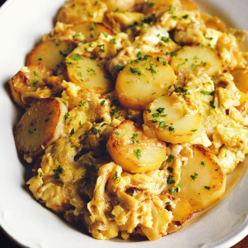

Gebakken aardappels met ui, knoflook en eieren

Ingredienten
- 500 g vastkokende aardappels, geschild
- 1½ grote ui, geschild, doormidden en in plakjes
- 4 teentjes knoflook, in plakjes
- 4 eetlepels olijfolie
- 6 grote eieren
- 2 eetlepels fijngehakte bladpeterselie
Bereiding
- Kook de aardappels in water met zout gaar (15-25 minuten). Giet ze af.
- Fruit de uien in een grote, afgedekte koekenpan met de olie op laag vuur gaar. Roer vaak. Ze moeten zacht
zijn en het vocht moet verdampt zijn, zodat alleen nog de olie aan het sissen is. Dat kan zo'n 25 minuten
duren. Fruit de knoflook een paar minuten mee.
- Snijd de aardappels in plakjes van iets minder dan 1 cm dik en doe ze bij de uien. Bak ze op halfhoog vuur
zonder deksel en keer ze met een spatel; de uien en aardappels moeten goudbruin worden. Doe er zout naar
smaak bij. Tot dit punt kunt u alles tevoren klaarmaken. Warm het op en ga vlak voor het eten verder met de
bereiding.
- Klop de eieren los met wat zout en giet ze over de aardappels. Roer op niet te hoog vuur totdat ze stollen.
Bestrooi alles met peterselie en dien het heet op.